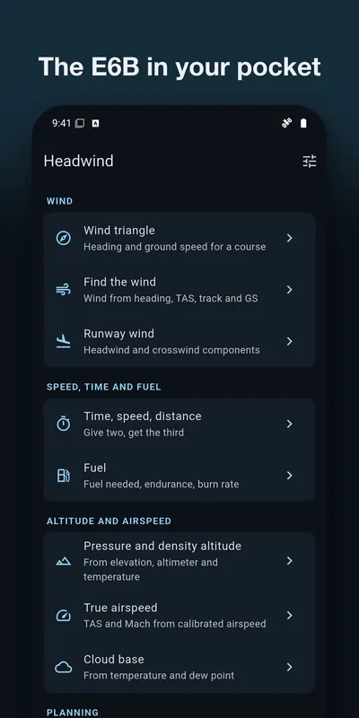
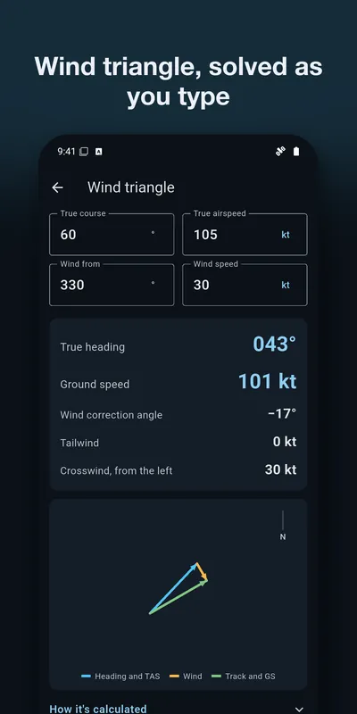
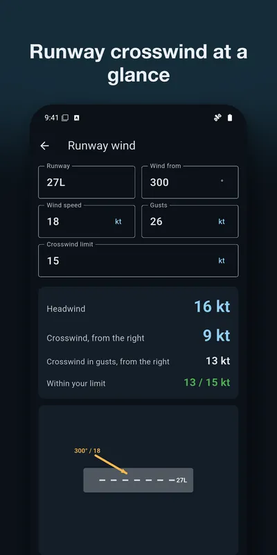
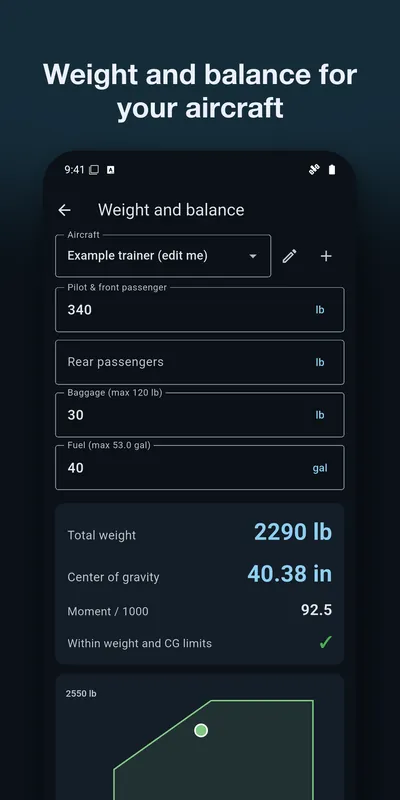
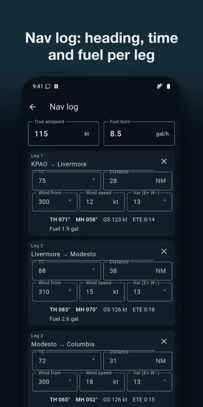
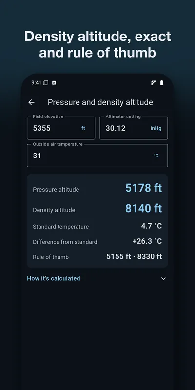

An E6B flight computer that solves as you type
Headwind works out wind correction, ground speed, runway crosswind, fuel and time on your phone, and shows how each answer was calculated. Made for student pilots and instructors. No ads, no account, no internet needed.
Get it on Google PlayAndroid. Free: wind triangle, find the wind, runway wind, time, speed and distance, fuel, cloud base, conversions. Headwind Pro, one purchase paid once, adds the rest.






Free calculators, nothing to install
Need one answer right now? These run in your browser and use the same formulas as the app.
Guides for student pilots
- What does an E6B flight computer compute?
- How to do a crosswind check before a flight
- What density altitude means for your takeoff
What it does
Wind
Wind triangle with a vector diagram, finding the wind from what you flew, and runway wind with gusts checked against your crosswind limit. All free.Time and fuel
Give any two of time, speed and distance to get the third. Fuel needed, endurance or burn rate, with fuel weight for avgas or Jet A. Also free.Altitude and airspeed
Pressure and density altitude with the rules of thumb beside the exact answer, true airspeed and Mach from calibrated airspeed. Pro.Planning
Weight and balance with your own aircraft and a CG envelope chart, a nav log, descent planning, turns and glide, holding entries. Pro.Where it helps
- In ground school, to check the answer you got on a manual E6B. "How it's calculated" under each result gives the formula behind it. What an E6B computes.
- Before a flight, to work out the crosswind on the runway in use against your limit. How to do a crosswind check.
- On a hot day or at a high field, to see how far density altitude is above the field. What density altitude means for your takeoff.
- Planning a cross-country, for headings, ground speeds, leg times and fuel.
For planning and training only, not for navigation. Check every result against your aircraft's flight manual and official sources before you rely on it.
Frequently asked
Can I use Headwind for navigation? No. It is for flight planning and training. Always check results against your aircraft's flight manual, its weight and balance report, and official sources.
Why does my density altitude differ a little from my textbook? Headwind computes the exact standard-atmosphere answer and also shows the rule of thumb most textbooks use (120 ft per °C above standard, 1,000 ft per inch of mercury). Both are shown so you can compare.
How do I change units? Tap the unit next to any number (for example kt) to switch it everywhere, or set them all in Settings.
Is the example aircraft real? No. It's a made-up four-seat trainer to show how weight and balance works. Edit it, or add your own aircraft with the numbers from its weight and balance report.
What does the free version include? Wind triangle, find the wind, runway wind, time/speed/distance, fuel, cloud base and conversions. Headwind Pro, a single purchase, adds pressure and density altitude, true airspeed and Mach, weight and balance, the nav log, descent planning, turns and glide, and holding entries.
Is there a subscription? No. Headwind Pro is a single purchase. Restore it on a new device from Settings.
Support
Questions, bugs, or feature requests: email contact@eastframe-technology.com. A human reads every message, usually the same day.
A short captioned walkthrough shows every feature.
Privacy policy
Effective 3 November 2026. Headwind is published by Eastframe Technology LLC.
What we collect: nothing. Headwind has no account system, no analytics, no advertising, and no crash reporting service. It never connects to the internet and sends no data to us or anyone else.
Your aircraft profiles and values are stored only on your device, until you delete them or uninstall the app.
Purchases are handled by the App Store or Google Play. We do not see your payment details.
Third parties. The app contains no third-party advertising or analytics code. The only external page it opens is this one, and only when you tap it.
Children. Headwind is not directed at children and collects no personal information from anyone.
Changes. A new version of this policy will be published at this address with a new effective date.